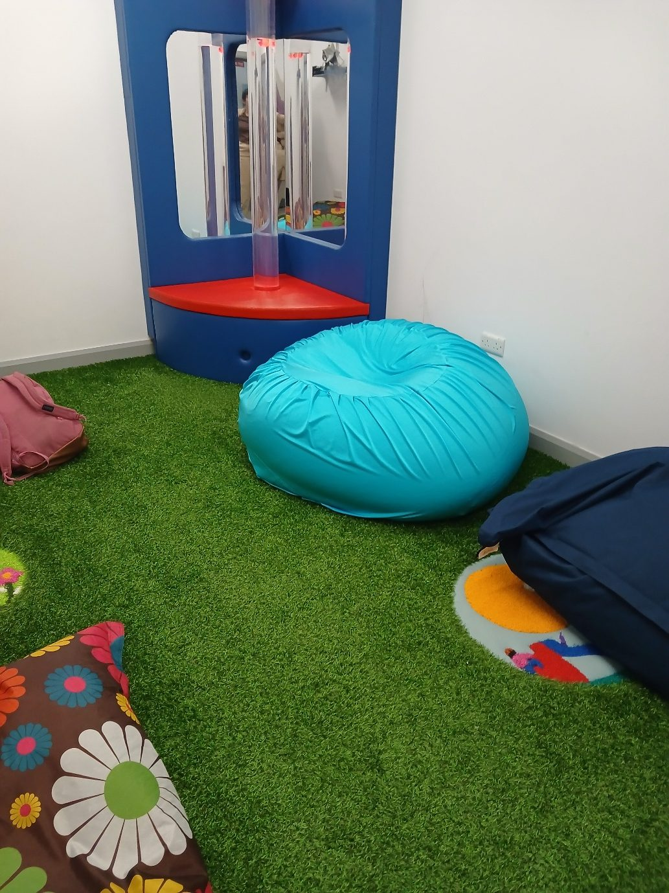

Since 2002
About Julie
It started because an occupational therapist could not buy what she needed.
A friend of Julie's, working as an occupational therapist, was having real difficulty sourcing suitable sensory products locally. Julie started experimenting. She had the sewing skill, and as an early childhood teacher she had spent years watching how children use movement and play to make sense of their bodies.
The first beanbags were made for that one therapist. Word got around — from parent to parent, and from one occupational therapist to the next — and the business grew from there. It has been going since 2002. Most people still come to Julie the same way: on the advice of an OT, or after seeing the beanbags in use at school.
Julie is keenly aware of how much movement and play matter to a developing child, and how vital the first seven years are while the body and brain are still forming. That is the thinking behind every product here: not furniture that happens to be soft, but something built for what a child actually needs to do with it.
Everything is still hand-made by Julie in County Cork, one at a time.

What families, therapists and schools say
In the years the beanbags have been on sale, the reaction has been fantastic and heartwarming. A few of the messages Julie has received.
“As an occupational therapist working with children with autism and sensory processing needs, I am a huge fan of Julie’s products. They do what they say on the tin! Their texture, colour, malleability, long life span and easy to wash — everything about them is perfect for the children I work with. The parents I work with often say they can’t imagine life without them.”
“Your all-lycra beanbag is the most amazing and appropriate gift for a sensory-seeking child. My daughter spends so much time regulating on it and my younger daughter absolutely loves it too. Thank you for all the time and effort you spend helping me. You went above and beyond.”
“It is without hesitation that I would recommend Sensory Beanbags to the families I meet through my work. The quality is excellent, and the beanbags are extremely durable and robust. Julie is knowledgeable and passionate about the service she provides, and a pleasure to talk to.”
“We have used Sensory Beanbags for twelve years with the children who attend our service. We have always found them very useful for comfort and therapy.”
“Mark still likes the blue stretch lycra cover more than the fleece. He likes the tactile sensations and that the fabric gives off a cool feeling. He loves to sit on the large lycra beanbag, and if he jumps or rolls around he prefers the X-Large.”
“The three beanbags we purchased from you ten years ago are being used as much as ever and get so much hacking without any bursting whatsoever. Amazing durability! All of my children’s friends automatically gravitate towards the beanbags.”
“Our son has sensory processing disorder and we got a sensory beanbag on the advice of his occupational therapist. He is able to get his jumping and crashing input as and when he needs it throughout the day, as well as relaxation and deep pressure. He has been so much calmer and happier from the day we got it. An excellently designed product.”
“Ella told me this morning that her blanket was ‘heaven — like a tight squeezy hug all night long’, which is the highest praise ever! The beanbag is a huge hit with everybody too.”
“The occupational therapist recommended your brown weighted snake for my son. He loves it. It’s draped over his shoulders as I speak. He slept with it the other night during the storm and found it very comforting.”
“We use the large and extra large beanbags in our sensory room. The colours are great, easy to wash, and they are safe and comfortable. The children love to get deep pressure using the extra large beanbags.”
“The beanbags are a great help. The therapist said he needs something to thrash about in. Liam loves it. We gave the second beanbag to the school — he was amazed to see it there, dived straight into it and said ‘Liambag!’”
“These beanbags are going down a treat here at our centre. We find they have a calming effect on the child.”
Talk to Julie
Every beanbag is made to order, so there is always someone to ask before you buy. Questions about sizes, fabrics, weights or delivery are all welcome.
- 087 131 9619Phone or text
- marihannon@gmail.comUsually answered within a day or two
- County Cork, IrelandEverything is made here by hand